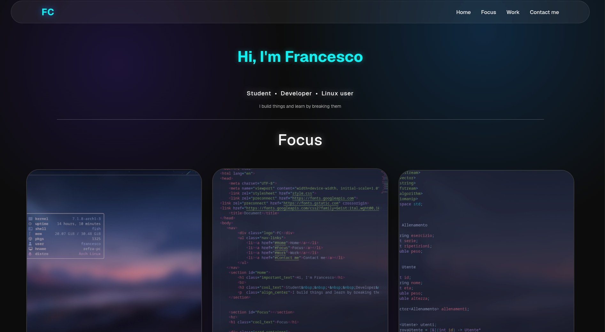

HTML
Semantic
HTML, CSS, JavaScript — from layout to micro-interations
/* portfolio.css */ .glass-panel { backdrop-filter: blur(16px); }
STACK
Semantic
Grid · Flexbox
Dom · Fetch
Versioning
PROJECTS

Main project
Designed and built from scratch with a modern glassmorphism aesthetic, featuring subtle blur effects, cyan glow accents, and a fully responsive multi-breakpoint layout. Deployed on Cloudflare Pages with automated CI/CD through GitHub.
GitHub
STATS
projects
hours of CSS
reusable components
responsive